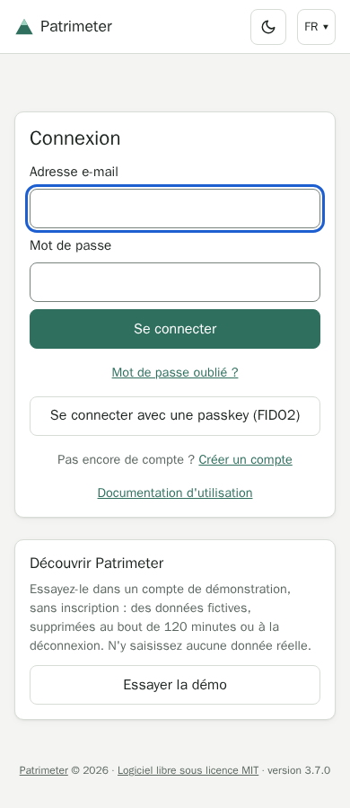
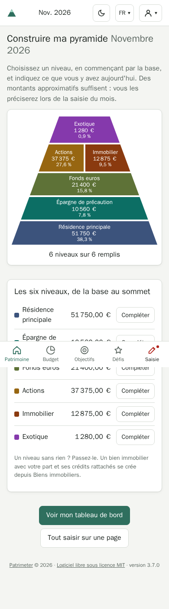
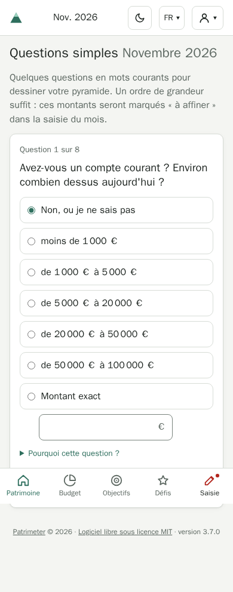
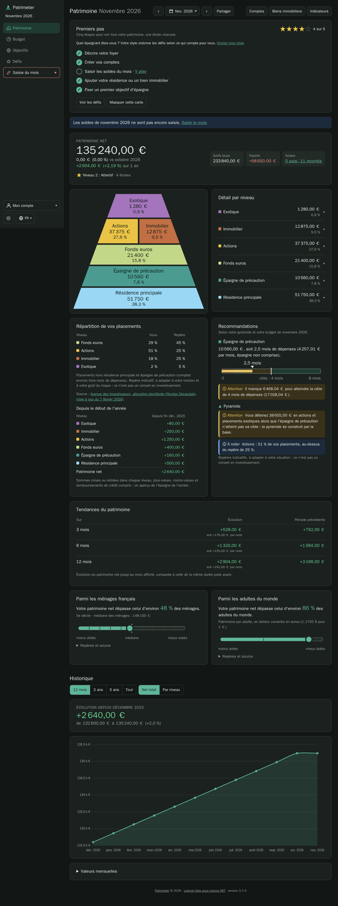

Première connexion¶
Essayer sans compte¶
Si l'instance propose la démonstration, la page de connexion affiche Essayer la démo : Patrimeter ouvre aussitôt un compte temporaire, sans inscription ni code, rempli de données fictives (patrimoine sur trois ans, budget d'un foyer). Un bandeau rappelle l'heure à laquelle il sera supprimé : au bout de 2 heures, ou dès la déconnexion, avec tout ce que vous y avez saisi. Les réglages de sécurité, l'import, le compte famille et Carbure n'y sont pas disponibles, et la quantité de données est limitée. N'y saisissez aucune donnée réelle. Le menu Mon compte mène aux comptes et aux biens immobiliers : vous pouvez en ajouter. Si trop de comptes de démonstration viennent d'être créés, la page de connexion dit combien de temps attendre.
Une visite guidée démarre aussitôt : une carte en bas de l'écran présente, en treize étapes, le patrimoine net, les objectifs d'épargne, la pyramide, la saisie du mois, les comptes, les biens, le budget et le rapport, et entoure l'élément dont elle parle. Suivant et Précédent passent d'une étape à l'autre, en changeant de page si besoin ; Arrêter la visite la ferme. Le bandeau du haut la relance (Lancer la visite guidée) ou, si vous l'avez quittée pour une autre page, la reprend à l'étape où vous en étiez.
Créer son compte¶
Sur la page de connexion, Créer un compte : adresse e-mail et mot de passe (12 caractères au moins, difficile à deviner ; une phrase de plusieurs mots convient). Un mot de passe présent dans une fuite connue est refusé.
Pendant la saisie, sous le mot de passe, une barre et un libellé indiquent sa robustesse (de Très faible à Très forte), estimée comme le fait le serveur : Moyenne au moins est demandée. Chaque exigence est cochée (✓) ou barrée (✗) au fil de la frappe : au moins 12 caractères, sans votre adresse e-mail, assez imprévisible, et les deux saisies identiques. La recherche dans les fuites connues se fait à l'envoi, de façon anonyme. Le même indicateur accompagne le changement de mot de passe (Mon compte) et la réinitialisation.

La page suivante rappelle l'adresse saisie : vérifiez-la. Un e-mail de confirmation y arrive ; son lien est valable 24 heures et demande le mot de passe choisi ; sans confirmation, l'inscription est effacée au bout de ces 24 heures (il suffit alors de recommencer). Si cette adresse a déjà un compte, l'e-mail vous le signale simplement : connectez-vous avec votre mot de passe habituel. Si les inscriptions sont fermées sur votre instance, l'administrateur crée le compte pour vous.
Application d'authentification¶
Le premier démarrage compte quatre étapes, rappelées en haut de chaque écran (« Étape 2 sur 4 · environ 2 minutes ») : votre compte, la sécurité (application d'authentification et codes de secours), la clé de récupération, puis vos premiers comptes.
À la première connexion, Patrimeter demande de configurer une application d'authentification (second facteur obligatoire), sur l'écran Protégez votre compte : scannez le QR code, puis saisissez le code à 6 chiffres affiché et Activer et voir mes codes de secours. Patrimeter affiche alors dix codes de secours à usage unique : notez-les en lieu sûr, ils remplacent le téléphone s'il est perdu. Copier les codes les met dans le presse-papiers, un par ligne, pour les coller dans un gestionnaire de mots de passe ; Imprimer les imprime.
Ensuite, à chaque connexion : adresse et mot de passe, puis code de l'application (ou un code de secours).
Clé de récupération¶
Patrimeter affiche une clé de récupération, une seule fois, et vous demande d'en ressaisir une partie. Pourquoi deux secrets ? rappelle le rôle de chacun : les codes de secours remplacent le téléphone pour vous connecter, la clé rouvre vos données si vous oubliez votre mot de passe. Imprimer imprime la clé. Vos données sont chiffrées avec une clé que seul votre mot de passe ouvre : sans clé de récupération, un mot de passe oublié fait perdre les données (l'accès au compte, lui, se retrouve). Rangez-la avec vos codes de secours, par exemple dans un gestionnaire de mots de passe : Copier la clé la met dans le presse-papiers.
Déverrouillage¶
Après une connexion par passkey sans déverrouillage, Patrimeter demande votre mot de passe pour ouvrir vos données : c'est l'écran Déverrouiller.
Mois en cours¶
Sous le logo sur un ordinateur, au milieu de la barre du haut sur un téléphone, Patrimeter rappelle le mois en cours (« Novembre 2026 », « Nov. 2026 » sur téléphone), quel que soit le mois affiché par la page : c'est celui que la saisie du mois propose d'abord. Un clic dessus y revient : sur la même page pour le patrimoine, le rapport, la saisie du mois et le budget, sinon sur la page Patrimoine. Seul, un mois s'écrit avec une majuscule, comme en anglais (« Novembre 2026 ») ; dans une phrase, il garde sa minuscule.
Menus¶
Dans une barre latérale à gauche sur un ordinateur (à partir de 1 024 pixels de large), en haut sur une tablette, en bas sur un téléphone : Patrimoine, Budget, Objectifs, Défis (défis et étoiles, si vous ne les avez pas désactivés), puis, toujours mis en avant en dernier, Saisie du mois. Vos Comptes et vos Biens immobiliers s'ouvrent depuis la page Patrimoine (boutons en haut), votre Foyer fiscal et catégories depuis la page Budget. Mon compte, en bas de la barre latérale (à droite de la barre du haut), réunit le profil, la sécurité et les agents IA ; dans la barre latérale, son menu et celui de la langue s'ouvrent vers le haut.
Premiers comptes¶
Tant qu'aucun compte n'existe, la page Patrimoine reste sur le mois en cours et propose, en dernière étape du premier démarrage, de dessiner votre pyramide (Dessinons votre pyramide) :
- Répondre à quelques questions (recommandé) : une question à la fois, en mots courants (« Avez-vous de l'argent de côté, disponible tout de suite ? »), avec une réponse par tranche (« de 1 000 € à 5 000 € »), un montant exact ou « Non, ou je ne sais pas ». Pourquoi cette question ? dit à quel niveau de la pyramide elle correspond. Une tranche compte pour son milieu. La dernière question, facultative, choisit votre style d'épargnant (défis). Créer mes comptes crée d'un coup les comptes répondus ;
- Construire ma pyramide, si vous connaissez vos comptes : la pyramide vide, et ses six niveaux de la base au sommet. Remplir ouvre un niveau avec ses comptes courants (compte courant, Livret A, LDDS, LEP, PEA, assurance-vie…) : indiquez le solde d'aujourd'hui de ce que vous détenez, laissez vide le reste, puis Valider ce niveau ; le niveau se colore dans la pyramide. Je n'en ai pas passe au suivant ;
- Autres façons de commencer, repliées :
- Saisie express : tous ces comptes sur une seule page, créés d'un coup avec Créer mes comptes ;
- Importer un fichier CSV : comptes, crédits et biens depuis un tableur (import CSV) ;
- Créer compte par compte, avec tous les réglages : niveau, nature, date d'ouverture (comptes).
Un compte famille ne se remplit pas : sous Ce compte est pour une famille ?, Réunir une famille mène aux membres de la famille.
Le nom de chaque compte reprend son type et se modifie. Pour un crédit, indiquez le capital restant dû. Des montants approximatifs suffisent : ils sont marqués à affiner dans la saisie du mois, jusqu'à ce que vous les y enregistriez. Les comptes sont ouverts ce mois-ci, avec ce solde ; si une ligne est fausse, rien n'est créé et la page le signale. Plusieurs comptes du même type, ou un bien immobilier avec votre part et ses crédits rattachés : ajoutez-les ensuite depuis la page Patrimoine (Comptes, Biens immobiliers).


Ensuite, la carte Premiers pas guide jusqu'à voir tout votre patrimoine (défis et étoiles). Si les défis sont désactivés, un cadre Complétez votre patrimoine propose ce qui manque encore, un bien immobilier ou un compte, jusqu'à ce que les deux existent.
Thème¶
Le bouton du thème, en bas de la barre latérale sur un ordinateur et en haut de la page sinon, bascule entre thème clair et sombre ; sans choix, le thème du système s'applique. La couleur d'accent et la densité d'affichage se choisissent dans Mon compte (apparence).

Langue¶
Patrimeter s'affiche en français ou en anglais : par défaut dans la langue de votre navigateur (le
français pour toute autre langue). Le bouton de langue, à côté de celui du thème, affiche la langue en cours
(FR ou EN) ; cliquez dessus pour choisir Français ou English dans le menu. Ce choix est retenu sur
cet appareil. Les montants suivent la langue : 1 234,56 € en français, €1,234.56 en
anglais. Les e-mails sont écrits dans la langue de la page qui les a déclenchés.